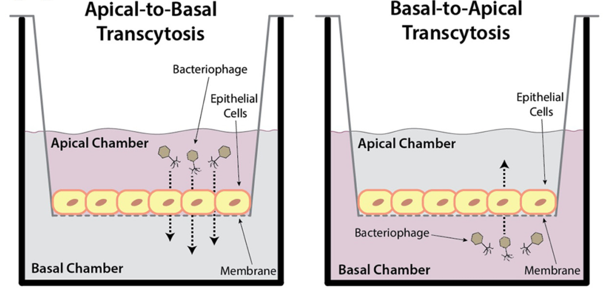

The human microbiome, the collection of microbes that live in and on the human body, has continued to gain attention as an important influencer of human health and disease. To date, the majority of microbiome studies have focused on bacteria, but microbiomes are actually complex communities that consist of fungi, archaea, viruses, and of course bacteria. The bacteriophage (viruses that infect bacteria) component of the human microbiome is of particular interest to human health because of the profound influence bacteriophages have on bacterial community composition and functionality. As an example, phages facilitate bacterial virulence in Cholera and enterohemorrhagic E. coli (EHEC). Despite their importance, we are still just scratching the surface into how phages interact with the human body to impact health. By understanding these phage - bacteria - human interactions better, we can better understand how the microbiome impacts human health, and how we can create microbiome-based therapies.
 A recent study led by Nguyen et al provided some really cool new insight into how bacteriophages interact with their human body host. In their paper “Bacteriophage Transcytosis Provides a Mechanism To Cross Epithelial Cell Layers”, published in mBio, the group described a mechanism to explain how phages access the human body, and consequently show up in unexpected “sterile” areas like blood and various organs. This is important because it provides insight into how phages might be interacting with the human body, despite their inability to actually infect human cells.
A recent study led by Nguyen et al provided some really cool new insight into how bacteriophages interact with their human body host. In their paper “Bacteriophage Transcytosis Provides a Mechanism To Cross Epithelial Cell Layers”, published in mBio, the group described a mechanism to explain how phages access the human body, and consequently show up in unexpected “sterile” areas like blood and various organs. This is important because it provides insight into how phages might be interacting with the human body, despite their inability to actually infect human cells.
The heart of the study was an experimental setup involving apical and basal incubation chambers that were separated by a controlled human cell layer, as is outlined in their figure below. The group started by adding phages to either side of the membrane layer and showed that they could collect phages from the other side of the membrane. The fact that fewer phages could be collected from the apical side than basal suggested directionality to phages’ transportation. They ran this experiment with cells from the gut, lungs, liver, and brain, and observed the same degree of phage transport across the epithelial layer. They also made these observations using a variety of bacteriophages. The group followed up on these experiments with some very cool and extensive microscopy and molecular experiments to confirm that the observed phage transportation was mediated by transcytosis potentially through the Golgi apparatus. Check out the paper itself for more of those details (it’s open access, so anyone can check it out).

As the authors pointed out, this is not the first time someone has demonstrated a mechanism by which bacteriophages could directly interact with human (eukaryotic) cells. Longtime reads will remember that we actually discussed an article in a Prophage post about phage uptake into eukaryotic cells as a mechanism for gene delivery. Other mechanisms have included phage transport across damaged epithelial tissue, and even “Tojan Horse” phages that enter an epithelial cell by hiding in a bacterium that is engulfed. The novel aspect of this current paper is that they provide comprehensive and detailed information around the mechanism by which phages cross the epithelial cell layer by transcytosis, which allows them to access other parts of the body.
Of course the next question is what these findings mean for human health and the microbiome/virome. A person’s mind could go wild speculating on the different ways that this mechanism could tie into human immunology, disease progression, etc, and these implications for future research are what make the paper especially exciting. However it is important to remember that these findings were done in cell culture (in vitro) and things could look very different in a real human system. It will be incredibly exciting to watch how this line of research progresses, but for now I think it’s a good idea to temper our expectations on how this is going to impact human health and disease.
If this all sounds cool, I would suggest checking out the manuscript online. It’s even open access, so it’s super easy to get the document. It’s a nice read and the authors really do present a lot of interesting data. And as always, let me know if I missed something or if you have a question, comment, or concern. Let me know in the comments below. Otherwise you can find me on Twitter, reach out by email, etc. I always love hearing from readers! :)
comments powered by Disqus